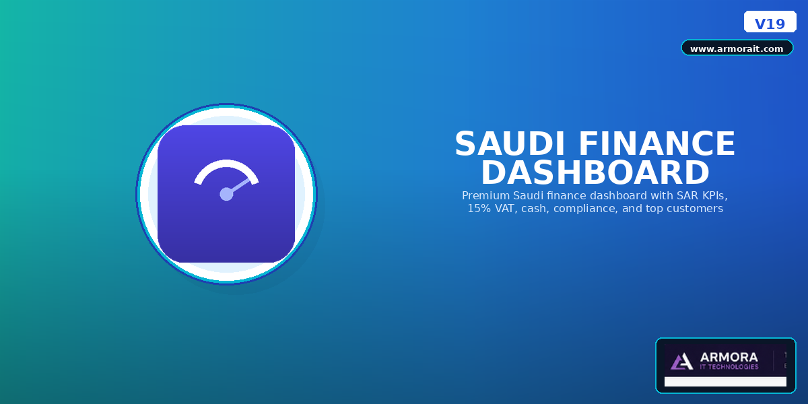
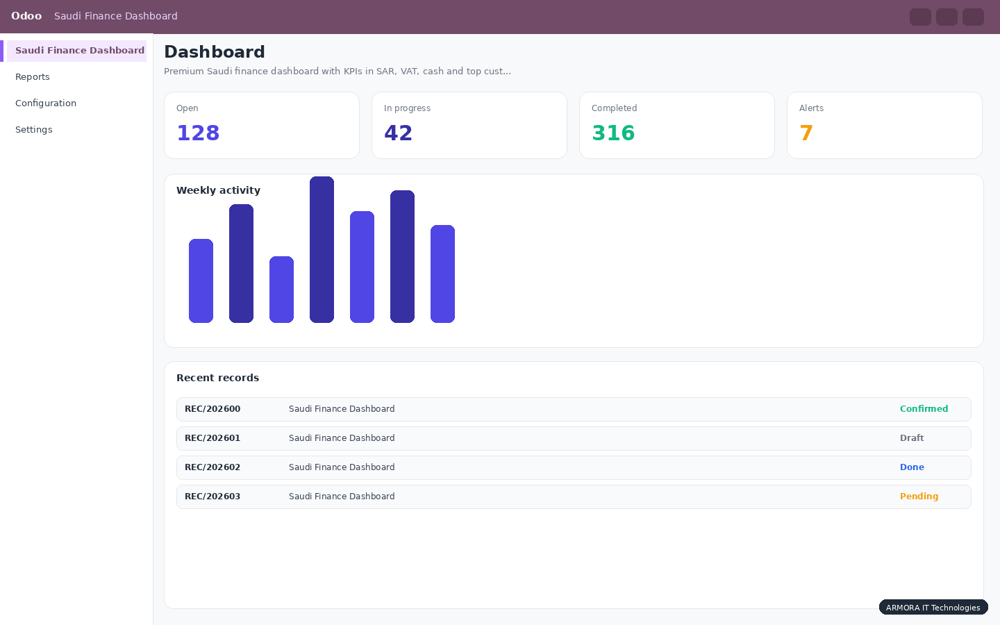
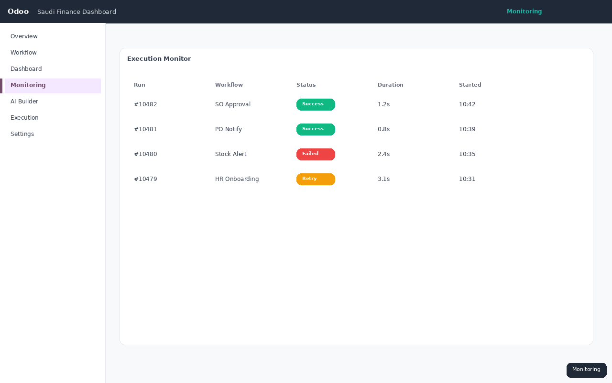
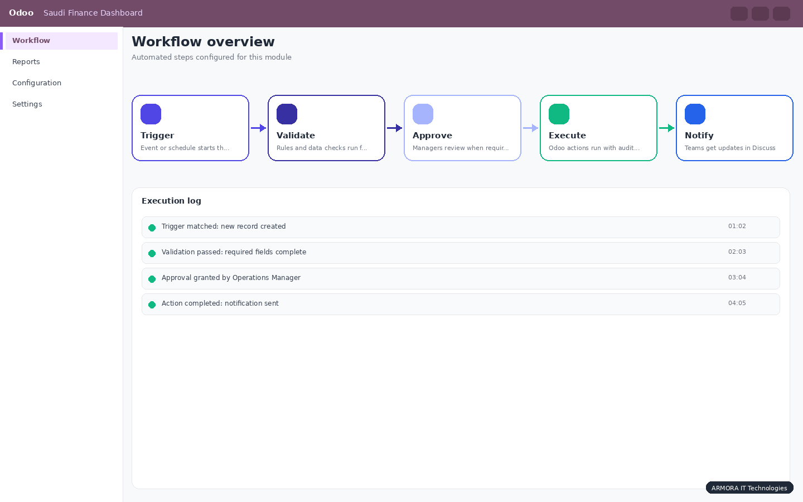
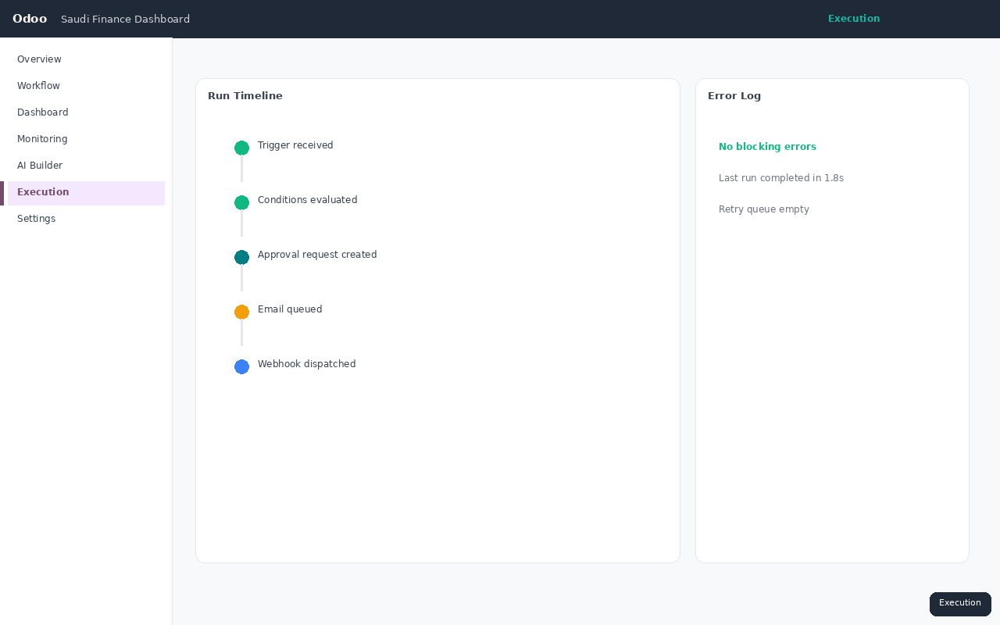

Executive finance dashboard built for Saudi companies and Odoo partners. See revenue, 15% VAT, receivables, payables, cash, compliance signals, and top customers in one bilingual OWL screen.

Finance managers in Saudi Arabia need more than generic accounting reports. They want SAR-ready KPIs, VAT visibility for ZATCA, receivables control, and a dashboard that works for bilingual teams without switching the whole Odoo interface.
Saudi Finance Dashboard delivers a premium OWL 2 finance cockpit inside Odoo 19 Community. KPI cards drill down to invoices, payments, tax reports, and journal entries. English and Arabic labels are built in, with optional Arabic hover tooltips through ARMORA Arabic Tooltip.

Current month revenue net of VAT with drill-down to posted invoices.
Output VAT, input VAT, and net VAT payable with tax report shortcuts.
Net cash position, receivables, payables, and overdue customer payments.
Monthly profit estimate with link to profit and loss reporting.


Invoiced-by-month trend and top customers

Top invoices with one-click drill-down
Does it work on Odoo 19 Community?
Yes. Built for Odoo 19 Community with OWL 2.
Is it only for Saudi Arabia?
It is optimized for Saudi finance teams, VAT at 15%, and bilingual operations, but works for any company using Odoo Accounting.
Do I need Arabic Tooltip?
It is listed as a dependency for the best bilingual hover experience. The dashboard still includes built-in Arabic labels.
Can I drill down from KPI cards?
Yes. KPI cards open the relevant invoices, payments, tax reports, or journal views.
ARMORA IT Technologies
www.armorait.com
info@armorait.com